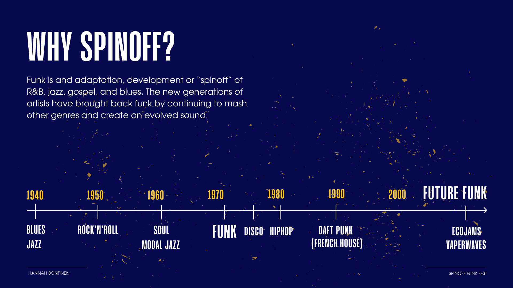
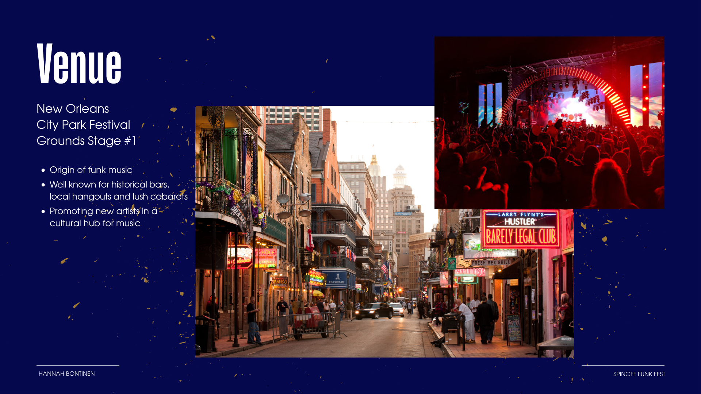
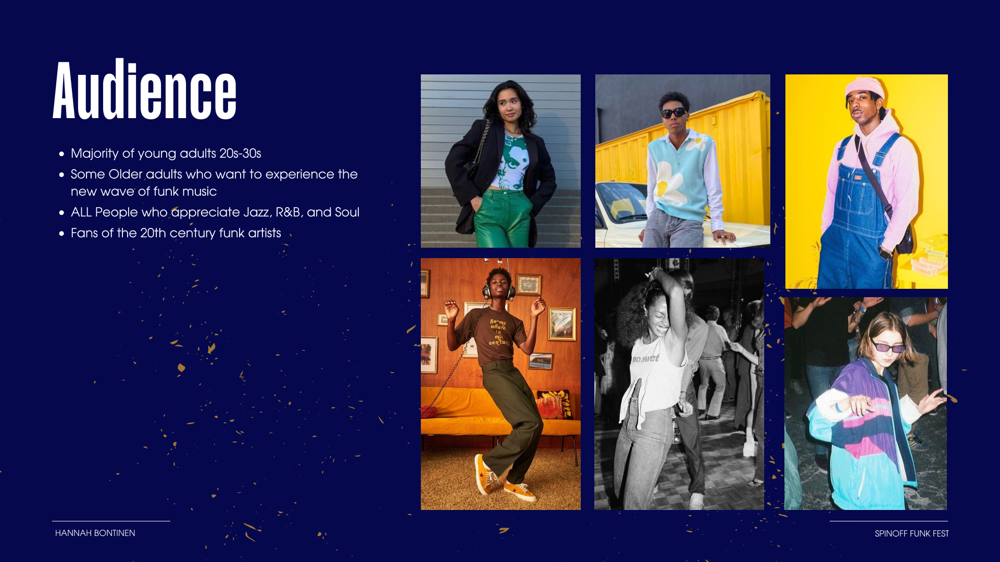
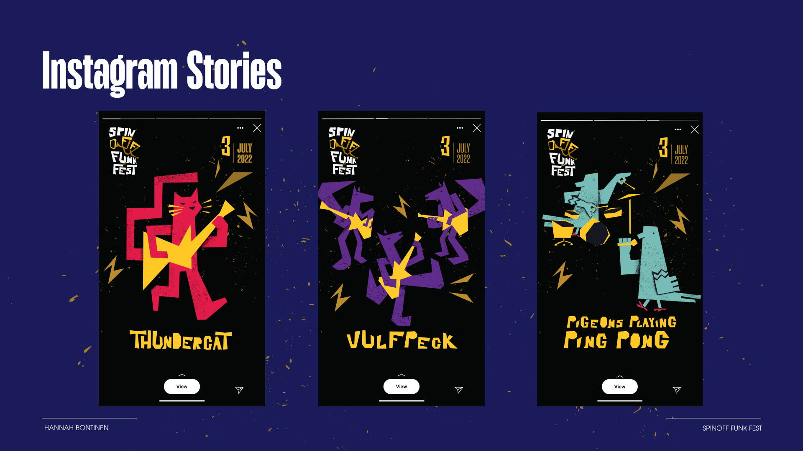

A simple but highly customizable responsive template. It's got a big hero area for your branding and intro. The work page is based on CSS Grid. The project page has a sticky sidebar. Can you find the easter eggs 🥚🥚🥚? Feel free to make this your own by adding your own logo, custom typography, colours, custom hover states, custom cursors, making something randomly fly across the screen, animated gradients, animated GIFs, or even super crisp animated SVGs.
© 2022-2023. Hand crafted with ❤ + Flexbox + CSS Grid by James Neufeld.